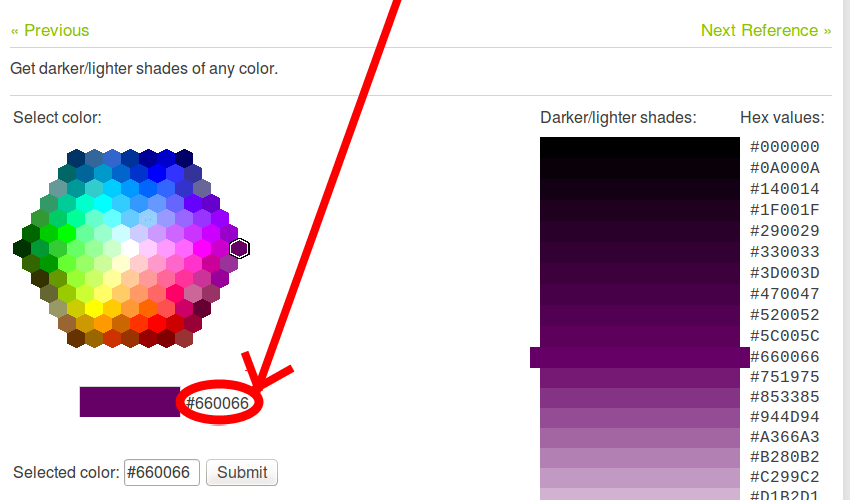
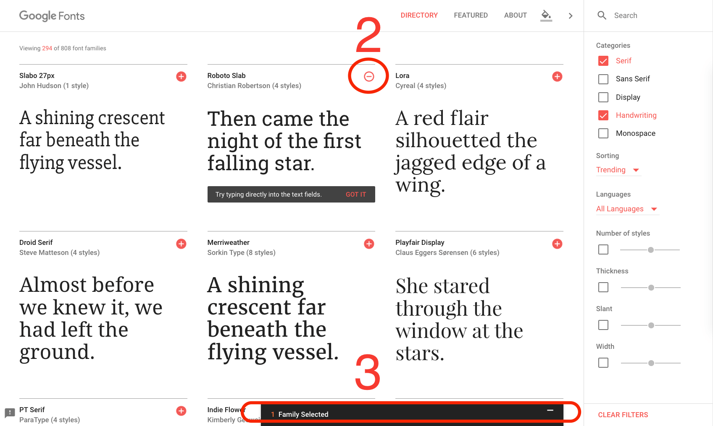

What will your website look like? discusses the planning and design work you have to do for your website before writing code, including "What information does my website offer?", "What fonts and colors do I want?", and "What does my site do?"
Before doing anything, you need some ideas. What should your website actually do? A website can do basically anything, but, for your first try, you should keep things simple. We'll start by creating a simple webpage with a heading, an image, and a few paragraphs.
To begin, you'll need to answer these questions:
Note: Complex projects need detailed guidelines that go into all the details of colors, fonts, spacing between items on a page, appropriate writing style, and so on. This is sometimes called a design guide, design system, or brand book, and you can see an example at the Firefox Photon Design System.
Next, grab pen and paper and sketch out roughly how you want your site to look. For your first simple webpage, there's not much to sketch out, but you should get in the habit of doing this now. It really helps — you don't have to be Van Gogh!
Note: Even on real, complex websites, the design teams usually start out with rough sketches on paper and later on build digital mockups using a graphics editor or web technologies.
Web teams often include both a graphic designer and a {{Glossary("UX", "user experience")}} (UX) designer. Graphic designers put together the visuals of the website. UX designers have a somewhat more abstract role in addressing how users will experience and interact with the website.
At this point, it's good to start putting together the content that will eventually appear on your webpage.
You should still have your paragraphs and title from earlier. Keep these close by.
To choose a color, go to the Color Picker and find a color you like. When you click on a color, you'll see a strange six-character code like #660066. That's called a hex code (short for hexadecimal), and represents your color. Copy the code down somewhere safe for now.

To choose an image, go to Google Images and search for something suitable.

Note that most images on the web, including in Google Images, are copyrighted. To reduce your likelihood of violating copyright, you can use Google's license filter. Click on the Tools button, then on the resulting Usage rights option that appears below. You should choose the option Creative Commons licenses.

To choose a font:


{{PreviousMenuNext("Learn/Getting_started_with_the_web/Installing_basic_software", "Learn/Getting_started_with_the_web/Dealing_with_files", "Learn/Getting_started_with_the_web")}}